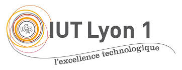

Le but de ce projet est de concevoir un site web presentant ces createurs et leurs premiere annee à l'IUT informatique Lyon 1.
Vous pouvez retrouver les consignes détaillées de ce projet à l'adresse suivante :
Ce site est completement factice et aucune information contenue à l'interieur ne peut être utilisée